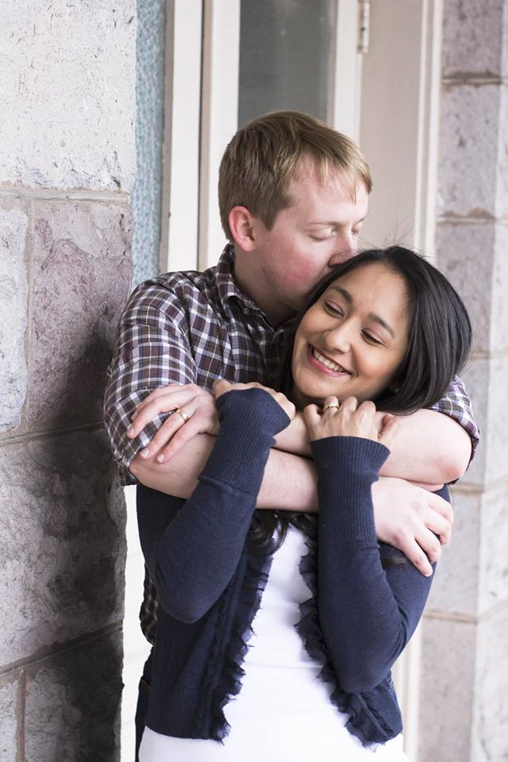

About Me
I am the youngest of five children, and was born in Snoqualmie Washington. From a young age, I had always had an interest in technology and "geeky" things. However, throughout my life, I had put those interests aside for a career in Physical Therapy.
After earning a Bachelor's Degree in Exercise Physiology from BYU-Idaho, I decided to make a career change and go into Software Development. That is what brought me to Inventive Group, and that is where my training is occurring now.
I am married to the most wonderful woman in the world! We are both bilingual speaking English and Spanish, which has helped me so much being able to communicate and relate with a whole new demographic.!
